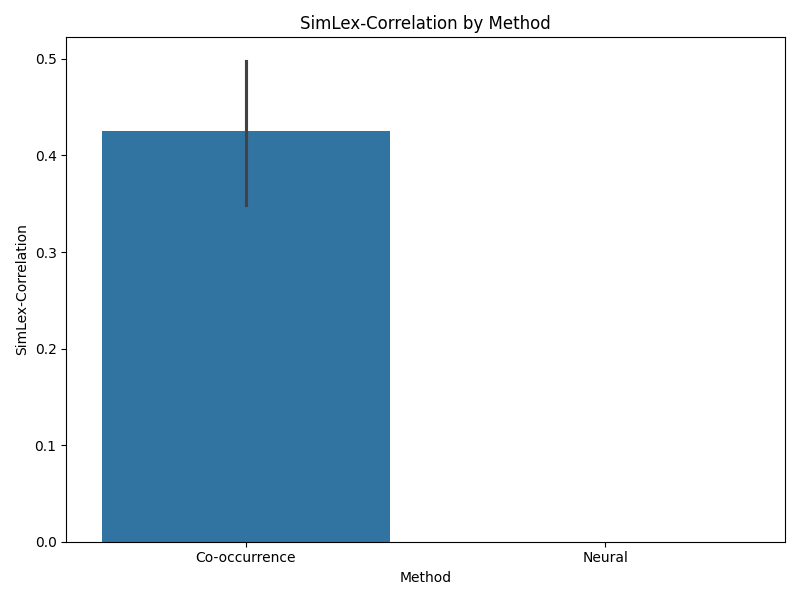
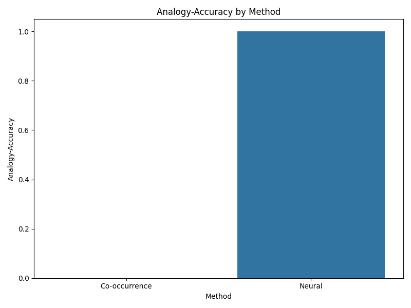
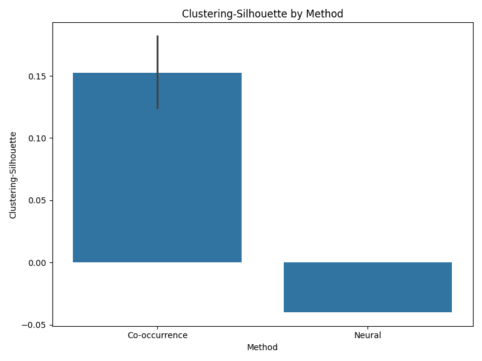

Word Embeddings Evaluation Report
This report compares the performance of different word embedding methods across multiple evaluation metrics.
Overview
Number of methods compared: 2
Total evaluations: 61
Performance Summary
SimLex-Correlation
Co-occurrence
Mean: 0.426
Std: 0.295
Range: [0.034, 0.990]
Neural
Mean: nan
Std: nan
Range: [nan, nan]
WordSim-Correlation
Co-occurrence
Mean: 0.480
Std: 0.286
Range: [0.002, 0.990]
Neural
Mean: nan
Std: nan
Range: [nan, nan]
Analogy-Accuracy
Co-occurrence
Mean: 0.000
Std: 0.000
Range: [0.000, 0.000]
Neural
Mean: 1.000
Std: nan
Range: [1.000, 1.000]
Clustering-Silhouette
Co-occurrence
Mean: 0.152
Std: 0.114
Range: [-0.008, 0.458]
Neural
Mean: -0.040
Std: nan
Range: [-0.040, -0.040]
Visualizations
Performance Heatmap
Heatmap showing the average performance of each method across all metrics.

Radar Chart Comparison (Static Image)
Static image of the radar chart comparing the relative strengths of each method across metrics.

SimLex-Correlation Distribution
Distribution of SimLex-Correlation scores across methods.
WordSim-Correlation Distribution
Distribution of WordSim-Correlation scores across methods.

Analogy-Accuracy Distribution
Distribution of Analogy-Accuracy scores across methods.
Clustering-Silhouette Distribution
Distribution of Clustering-Silhouette scores across methods.
Interactive Radar Chart
The following interactive radar chart allows you to explore the relative performance across methods.
Detailed Statistics
| Method | Metric | Mean | Std Dev | Min | Max |
|---|---|---|---|---|---|
| Co-occurrence | SimLex-Correlation | 0.426 | 0.295 | 0.034 | 0.990 |
| Co-occurrence | WordSim-Correlation | 0.480 | 0.286 | 0.002 | 0.990 |
| Co-occurrence | Analogy-Accuracy | 0.000 | 0.000 | 0.000 | 0.000 |
| Co-occurrence | Clustering-Silhouette | 0.152 | 0.114 | -0.008 | 0.458 |
| Neural | SimLex-Correlation | nan | nan | nan | nan |
| Neural | WordSim-Correlation | nan | nan | nan | nan |
| Neural | Analogy-Accuracy | 1.000 | nan | 1.000 | 1.000 |
| Neural | Clustering-Silhouette | -0.040 | nan | -0.040 | -0.040 |